The sequence picture, design C: Marquee
Louis's pick of three, 2026-11-14. Every picture here is drawn from a real picture's JSON as it stands today, by the rules in the plan. Nothing is added to the data.
The picture the design was picked on
A participant is a badge in its tone and a name, with no box. A call is a beam from violet at its sender to blue at its receiver, with dots running along it. An answer is a thin dashed grey line. The key has an item only for what the picture has.

The same picture on a light page

Eight participants, blocks three deep, a loop, an opt and an alt
The core's one turn, the hardest of the 64. A block inside another sits inside its frame. The key names each kind of block the picture has. A call a participant makes to itself turns out of its lifeline and back.

Numbered steps, a person, and a note over several lifelines
F148's question to the guide. A step's number stands in a ring where its line starts. A person wears a person's icon. A note spans the lifelines it names. A message too long for one line breaks over two.

Calls a participant makes to itself, and the longest message
F106.1's main case, which has three such calls and the longest message of all 64, 105 characters, over three lines.
